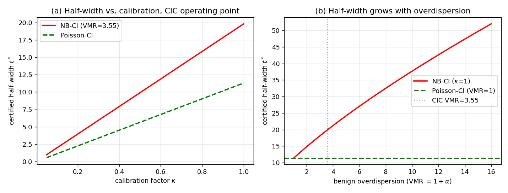

Research
Certified Anomaly Detection for Overdispersed IoT Traffic via a Negative-Binomial Khinchine-Fubini Concenration Inequality
A submitted IEEE Transactions on Information Forensics & Security manuscript, currently under full consideration, focused on certified anomaly detection for overdispersed IoT traffic using a Negative-Binomial Khinchine–Fubini concentration inequality.
IoT Security • Overdispersed Count Data • Negative-Binomial Models • Concentration Inequalities • Certified Anomaly Detection
Research Problem
Safety-critical IoT deployments need anomaly detectors that provide a pre-deployment guarantee on the false-positive rate, not only post-hoc accuracy on a held-out test split.
Existing concentration-based certified detectors built on Poisson assumptions are limited by equidispersion: the assumption that per-window traffic counts have variance equal to their mean. Real IoT traffic is often strongly overdispersed because of bursty device behavior, protocol heterogeneity, and traffic aggregation.
When benign traffic is overdispersed but the certified interval is sized using a Poisson model, the interval can be mis-sized. This research addresses that gap by developing a certified detector designed for overdispersed IoT count traffic.
Core Contribution
The work introduces a Negative-Binomial Khinchine–Fubini concentration inequality for weighted sums of independent Negative-Binomial counts.
This moment bound is combined with Markov's inequality to construct certified confidence intervals whose half-width adapts to local dispersion. In the equidispersion limit, the framework recovers the Poisson–Touchard interval, allowing a direct comparison between Negative-Binomial and Poisson certified detectors.
The result is a certified anomaly detection framework that better reflects overdispersed IoT traffic while preserving the interpretability and formal false-positive-rate control of concentration-based detection.
Key Results
- Achieved AUC 1.000 on CIC IoT-DIAD 2024, compared with 0.965 for the Poisson certified baseline under the same calibrated setting.
- Improved detection on volumetric attacks, lifting F1 by up to 0.34 at a 1% false-positive-rate operating point.
- Confirmed on Gotham 2025 that the Negative-Binomial model fit overdispersed device traffic significantly better than the Poisson model on 98.5% of applicable devices.
- Preserved the certified false-positive guarantee at the κ = 1 operating point, with realized benign FPR remaining at 0.000 across validation settings.
Experimental Results
The NB-CI detector was evaluated on CIC IoT-DIAD 2024 as the primary benchmark and on Gotham 2025 as a cross-testbed stress test for overdispersed multi-device IoT traffic. The evaluation compares NB-CI against the Poisson certified baseline, a conformal anomaly detector, and a learned MLP baseline.

Detector Comparison on CIC IoT-DIAD 2024
On the identical CIC IoT-DIAD test stream, NB-CI matched the best raw detection performance while retaining a certified false-positive-rate guarantee that the learned baseline does not provide.
| Detector | AUC | pAUC0.05 | Realized FPR | Certification |
|---|---|---|---|---|
| NB-CI | 1.000 | 1.000 | 0.000 | Certified concentration bound |
| Poisson-CI | 0.967 | 0.948 | 0.000 | Certified concentration bound |
| Split Conformal | 0.511 | — | 0.0066 | Valid calibration, low power |
| MLP Baseline | 1.000 | — | 0.0100 | No pre-deployment certificate |
Cross-Testbed Stress Test
On Gotham 2025 dataset, the Negative-Binomial model fit overdispersed device traffic significantly better than the Poisson model on 98.5% of applicable devices. On the non-trivial contested devices, NB-CI outperformed the Poisson detector by a median of 0.40 AUC, with the strongest gains appearing on highly overdispersed camera channels.
These results show that NB-CI extends certified IoT anomaly detection beyond the equidispersed Poisson setting, improving performance on overdispersed traffic while preserving formal false-positive-rate control.
Technical Approach
The detector models IoT traffic as overdispersed count data, estimates local Negative-Binomial behavior from benign windows, and constructs certified confidence intervals whose width adapts to the observed dispersion.
1. Count-Based Telemetry
Network traffic is aggregated into short time windows and represented through protocol-aware count features, with event counts used as the detection target.
2. Overdispersion Modeling
Instead of assuming that count variance equals the mean, the framework uses a Negative-Binomial model to represent bursty benign traffic whose variance-to-mean ratio exceeds one.
3. Local Dispersion Estimation
For each incoming window, nearby benign windows are used to estimate local Negative-Binomial parameters, allowing the interval width to adapt to local traffic variability.
4. Certified Interval Construction
The NB Khinchine–Fubini moment inequality is combined with Markov's inequality to produce a certified interval with a target false-positive-rate guarantee.
5. Calibration and Deployment
The certified κ = 1 setting preserves the formal guarantee, while a bootstrap-calibrated operating point recovers practical recall for deployment-oriented evaluation.
Role and Contributions
I served as a co-author on this submitted manuscript in collaboration with Dr. S. Spektor, Director of the Graduate Program in Data Analytics at Canisius University. My contributions spanned research implementation, experimental evaluation, result verification, manuscript preparation, and research communication.
Research Implementation
Contributed to the implementation and testing of the NB-CI certified anomaly detection pipeline, including count-based feature construction, local dispersion estimation, and detector execution.
Experimental Evaluation
Supported evaluation across CIC IoT-DIAD 2024 and Gotham 2025, including NB-vs-Poisson comparisons, certified FPR validation, conformal baseline comparison, bootstrap analysis, and latency benchmarking.
Results and Reproducibility
Helped prepare, verify, and organize experimental outputs, tables, figures, result summaries, and reproducibility materials supporting the submitted manuscript.
Manuscript Development
Contributed to manuscript review, technical refinement, result checking, and research communication for journal submission.
Research Artifacts
Supporting artifacts for this research include the submitted manuscript, experimental outputs, distributional-fit diagnostics, benchmark comparisons, and reproducibility materials. Public links will be added when they are appropriate to release.
Submitted Manuscript
Full research paper describing the Negative-Binomial Khinchine–Fubini concentration inequality, certified interval construction, and IoT anomaly detection evaluation.
Submitted, under full considerationExperimental Results
Evaluation outputs covering CIC IoT-DIAD 2024, Gotham 2025, NB-vs-Poisson comparisons, conformal baseline results, certified FPR validation, and latency benchmarking.
Summarized on this pageReproducibility Package
Code, configuration files, deterministic splits, result tables, and supplementary experiment outputs supporting the submitted manuscript.
Pending public release